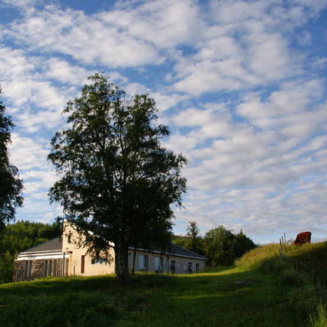

Dra på retrett!
Har du en hektisk hverdag, eller kanskje du er litt nysgjerrig på klosterlivet? På retrett får du en pause fra dagliglivet og du får en smakebit av hvordan livet i kloster er. Det er en god idé å få med lokallaget ditt eller styret på retrett. På den måten for dere oppleve noe sammen, og styrkes i troen og fellesskapet. Det er mange klostre i Norge, så du trenger ikke dra så langt heller.
Under får du informasjon om aktuelle retretter og de klostrene som pleier å invitere til retrett. Hvis du har tips om andre klostre eller retretter kan du sende det til webred@nuk.no.
Maristene på Strømmen

Ønsker du å sette av tid til Gud? Tid til å være tilstede for ham alene, for å lytte, for å kjenne hans råd om valg, du alt har tatt, eller om veien videre? Er det vanskelig å få fri en hel helg til å delta på retretter på Grefsen eller andre retrettsteder? Dette kan være vrient for f. eks. unge foreldre eller studenter med jobb.
På en lørdagsretrett er du innbudt til å fordype deg i bønn og slippe Herren til i ditt liv, innenfor en overkommelig ramme.
Se Maristpatrenes egen side for mer informasjon.Tautra Mariakloster
Tautra Mariakloster er åpne for besøk og retrett. Du kan ta kontakt med klosteret for å dra på en personlig retrett. Klosteret tilbyr også forskjellige retretter og "Kom og se"-helger.
På bloggen deres for unge voksne www.klosterliv-monasticlife.org har de blant annet en ukentlig refleksjon over søndagens messelesninger.
Grefsen retrettsenter
St. Josefsøstrene på Grefsen har et eget retrettsenter som de driver i samarbeid med p. Erik Ruud og p. Rory Mulligan. Begge er tidligere ungdomsprester i NUK. De inviterer til flere retretter våren 2013. Det er også mulig å bare ta kontakt med søstrene hvis du ønsker å komme med besøk eller arrangere en retrett for ditt lokallag eller styre. Våren 2012 hadde f.eks. lokallaget Oslo Unge Voksne to retrettkvelder der i fastetiden og NUKs Arbeidsutvalg hadde et døgns retrett på Grefsen.
Munkeby Mariakloster
Brødrene på Munkeby Mariakloster inviterte til sin første organiserte retrett 24.-26. februar. Klikk her for å se invitasjonen til helgen.
Forhåpentligvis vil brødrene invitere til en ny retrett senere, men i mellomtiden kan du ta kontakt direkte for å reise på en personlig retrett. Se deres nettsider www.munkeby.net eller ta kontakt på post@munkeby.net.
Forhåpentligvis vil brødrene invitere til en ny retrett senere, men i mellomtiden kan du ta kontakt direkte for å reise på en personlig retrett. Se deres nettsider www.munkeby.net eller ta kontakt på post [krøll] munkeby.net.
St. Elisabethsøstrene

St. Elisabethsøstrene på Nordstrand i Oslo inviterer ofte til kallshelger, retretter og arrangementer for jenter og unge kvinner. Følg med på deres nettsider http://stelisabeth.katolsk.no/ for deres neste arrangement.